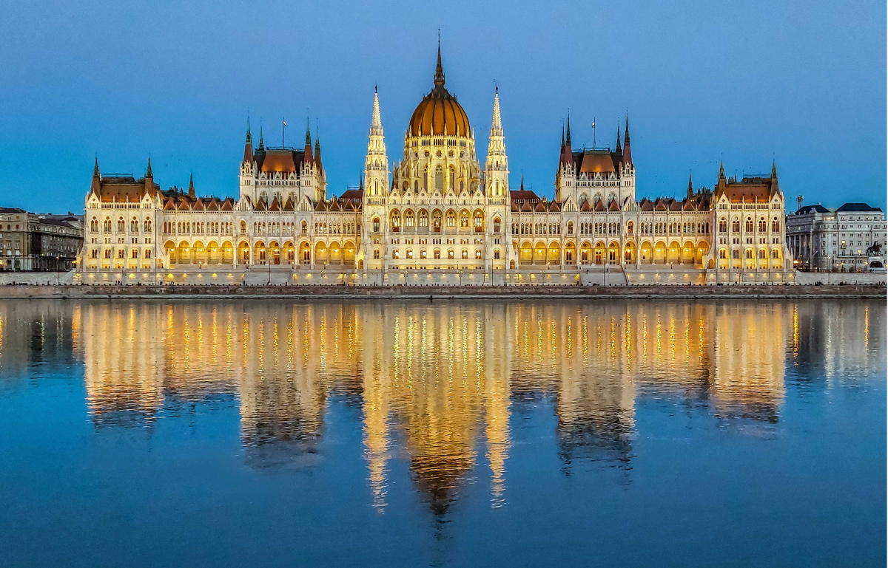

A helyszín Magyarország szíve, Budapest lesz.
Azért választottuk Pestet, mert hatalmas város, Magyarország legnagyobb területű városa, ezért sosem fogunk program nélkül maradni.
Rengeteg látnivaló van ott, ezért mindig lesz nézni valamit.
Céljaink eléréséhez tömegközlekedést fogunk használni, pl. metró, hajó.
